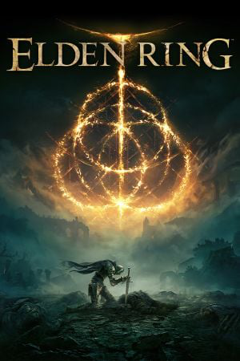
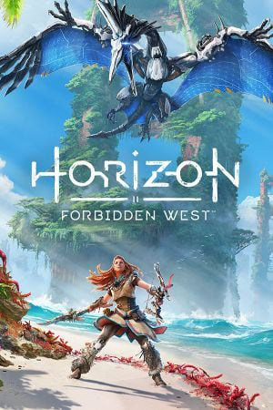
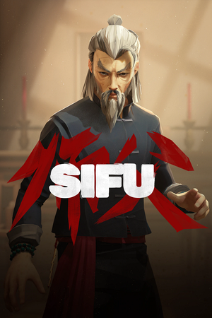
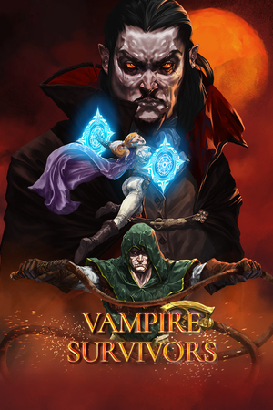

Les meilleurs jeux vidéos de 2022

Le jeu démarre avec une cinématique d'introduction qui évoque
la mythologie du monde du jeu, généralement remplie d'entités divines ou
quasi-divines qui finissent par périr ou par être déchues, des êtres inférieurs,
mais tout de même très puissants, qui prennent alors le relais et se disputent
leurs restes. C'est ensuite au joueur de prendre le relais en incarnant un être
tiré du fin fond de la hiérarchie de ce monde d'abattre ces êtres puissants afin
de s'élever au-dessus d'eux et de restaurer l'ordre/la vie/la lumière sur
le monde, possiblement au prix de sa vie ou d'un grand sacrifice.

Kratos et Atreus doivent se rendre dans chacun des neuf royaumes
à la recherche de réponses alors qu'ils se préparent à la bataille prophétisée
qui mettra fin au monde. Tandis que les forces asgardiennes se préparent à la
guerre, le père et le fils vont devoir rassembler des alliés de tous les
royaumes tout en explorant des paysages absolument époustouflants.

L'histoire suit le parcours d'un chat errant qui chute dans une
ville confinée peuplée de robots, de machines et de bactéries mutantes, et
entreprend de retourner à la surface avec l'aide d'un compagnon drone, B-12.
Le jeu est présenté dans une perspective à la troisième personne. Le joueur
traverse l'univers du jeu en sautant sur des plateformes et en escaladant des
obstacles, et peut interagir avec l'environnement pour ouvrir de nouveaux
chemins. En utilisant le B-12, il peut stocker des objets trouvés dans le
monde et pirater la technologie pour résoudre des énigmes. Tout au long du jeu,
le joueur doit échapper aux Zurks et aux Sentinelles antagonistes, qui tentent
de le tuer.

Un renard anthropomorphe, autour du monde du jeu, interagissant
avec des objets et combattant des ennemis. Le jeu est structuré de manière
similaire à The Legend of Zelda, avec une progression limitée à certaines zones
du monde du jeu jusqu'à ce que le joueur ait collecté une nouvelle arme ou
capacité à utiliser par le renard, ajoutant quelques touches de la série Dark
Souls. Le but et la méthode de jeu sont quelque peu obliques; Le dialogue
présenté au joueur est généralement d'une langue étrange, bien que les
personnages ou les mots sélectionnés soient lisibles dans la langue du joueur
qui peut faire allusion à des solutions de puzzle, et certains des éléments
que le joueur trouvera sont des pages qui composent le manuel du jeu.

A Plague Tale : Requiem est la suite du premier jeu baptisé
Innocence. Tout comme le premier jeu, il se déroule en plein Moyen Âge français,
plus précisément alors que la peste noire sévit. Nous retrouvons nos deux héros
Amicia et son frère Hugo. Il s’agit d’un jeu d’aventure avec une portée
historique, mais qui base son gameplay sur la discrétion, tout comme le premier
jeu. Mais cet opus aura évidemment son lot de nouveautés dont une Amicia plus
guerrière et une histoire bien plus sombre.

Horizon Forbidden West est un jeu vidéo d'action-RPG développé
par Guerrilla Games et publié par Sony Interactive Entertainment, sorti le 18
février 2022 sur PlayStation 4 et PlayStation 5. Il s'agit de la suite d’Horizon
Zero Dawn et relate des événements se déroulant six mois après. Le jeu prend
place dans un monde ouvert post-apocalyptique avec une perspective à la
troisième personne. Le joueur contrôle la protagoniste Aloy, une chasseuse de
machines, alors qu'elle se rend dans une Amérique occidentale ravagée par des
tempêtes massives et des machines mortelles.

Contrairement au déroulement classique des précédents Pokémon,
Légendes Pokémon : Arceus vous proposera d'incarner une personne perdue dans
l'espace temps et propulsée dans la région d'Hisui à un époque où les humains
n'avaient pas encore apprivoisé les Pokémon. De ce fait, vous n'aurez
aucun badge à récupérer. Vous devrez simplement explorer la région et découvrir
la manière de vivre des Pokémon afin d'évoluer dans les échelons de la Team
Galaxie.

Tinykin ne semble pas, de prime abord, apporter de grandes
nouveautés au monde du jeu vidéo. Il s’inscrit dans une liste interminable
de jeux de plateformes et d’exploration, avec une mécanique de gameplay
inspirée de Pikmin. Le pitch se montre basique, voire déjà vu. L’histoire
suit les (més)aventures de Milo, un archéologue intergalactique venu du
futur et coincé sur Terre dans les années 90. Mais le studio français
Splashteam prouve une nouvelle fois toute la complexité qui sous-tend
le jeu vidéo. Il ne suffit pas d’avoir des idées neuves, mais de bonnes
idées. Et Tinykin en est rempli.

Sifu est un jeu d'action-aventure qui se joue à la troisième
personne. Les attaques de base peuvent être enchaînées, bien que certains
combos puissent offrir aux joueurs des opportunités tactiques
supplémentaires comme la possibilité de renverser les ennemis ou de les
étourdir. Le protagoniste et tous les personnages ennemis hostiles ont une jauge
de structure. Lorsque sa résistance tombe à zéro, la garde de ces personnages
se brisera et ils deviendront beaucoup plus vulnérables et sans possibilité
de parer les attaques. Pour se défendre, le joueur peut également bloquer
les frappes, bien que cela impactera la jauge, ou bien esquiver vers le
bas ou vers le haut. Une parade réussie permet au joueur d'étourdir
l'ennemi ou de le projeter.

Sorti en décembre 2021, Vampire Survivors propose une expérience
de survie avec un gameplay minimaliste et des éléments issus du genre Roguelite.
Votre objectif sera simple puisqu'il faudra survivre le plus longtemps possible
à des vagues de créatures et de boss de plus en plus puissants, en tentant
d'obtenir le plus de pièces d'or et de gemmes possibles afin de faire évoluer
votre personnage. Bien entendu, les différents personnages, tous dotés de
passifs et d'armes différentes, auront des avantages et des inconvénients en
fonction de votre progression dans le jeu et même dans une partie.